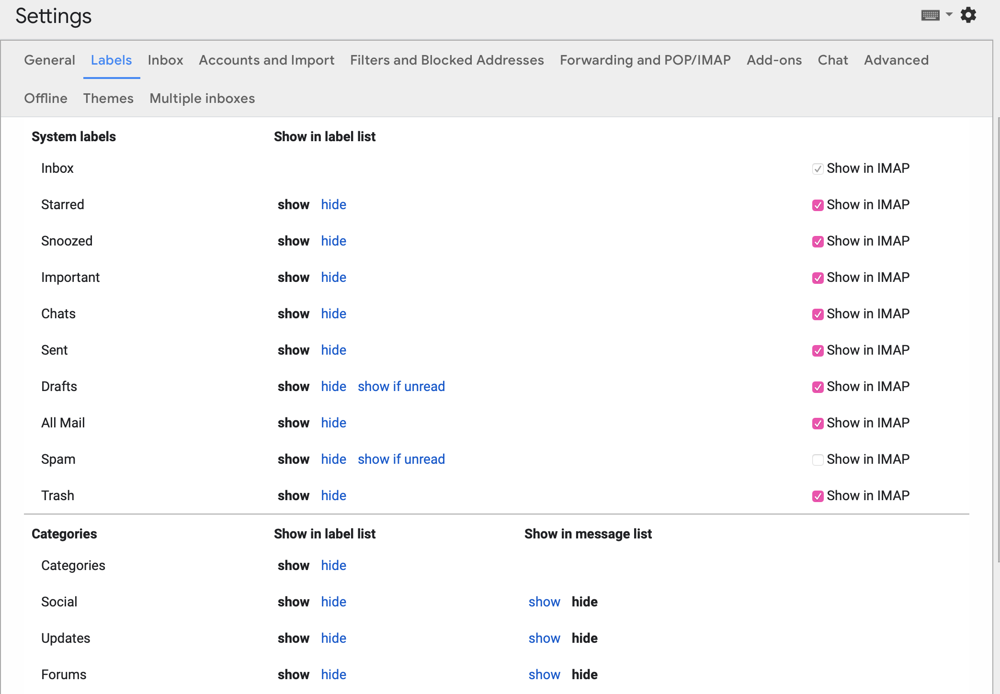

Wanderlust
Table of Contents
Wanderlust is a Emacs email client, I have had enough with Thunderbird and Mail on macOS (Thunderbird uses a ton of RAM and Mail got werid bugs that no one except me seems have encountered, and both of them sucks at searching mails), and apparently Outlook doesn't work on mac, so I'm finally getting my hand dirty with Emacs email client.
1 References
2 Install
You need APEL, FLIM/CLIME, SEMI, in that order, and, of course, wanderlust.
I installed them with my cowboy.el (in the brute force manner), you can just install from melpa.
3 Receive Mail
3.1 Folder
First, config file is ~/.folders, you can change it by wl-folders-file. Here you setup "folders", for wanderlust there is only folder,
no account.
Mishoo has a detailed and helpful explanation of this, but for archiving purpose I'll repeat him below.
WL stores the folders information in the file “$HOME/.folders” (dot folders). Here's the syntax for one IMAP folder:
%INBOX:johndoe/clear@mail.domain.com:993! "INBOX"
The above tells WL that we have an IMAP folder (starts with “%”), on the server named “mail.domain.com”, using “clear” (plain) authentication, user name “johndoe”, port “993” and should use secure sockets layer (SSL) when connecting (ends with “!”). Additionally, the string "INBOX" at the end specifies how this folder should be named locally.
P.S. % is IMAP folder, + is local folder, other folders see the manual.
3.2 Grouping
A single folder is not very useful, here is how to setup groups in WL:
GMAIL {
%Inbox:casouri/clear@imap.gmail.com:993! "Inbox"
%[Gmail]/All Mail:casouri/clear@imap.gmail.com:993! "All Mail"
%[Gmail]/Sent Mail:casouri/clear@imap.gmail.com:993! "Sent"
%[Gmail]/Starred:casouri/clear@imap.gmail.com:993! "Starred"
%[Gmail]/Drafts:casouri/clear@imap.gmail.com:993! "Draft"
%[Gmail]/Trash:casouri/clear@imap.gmail.com:993! "Trash"
}
And it looks like this in WL:
[-]Desktop:0/37/24319
[-]GMAIL :0/37/24319
Inbox:0/0/2
All Mail:0/0/544
Sent:0/0/304
Starred:0/0/1
Draft:0/0/0
Trash:0/37/23468
(The Desktop can be changed by variable wl-folder-desktop-name)
It took me a while to sync up the labels in Gmail and my local WL folders.
The part [Gmail]/All Mail is the folder (label in Gmail).
I thought that the [Gmail] is some sort of special syntax,
turns out it's just how Google name their system labels (folders) in Gmail.
Also you need to make sure you have made these system labels available to SMTP:

3.3 Update: Use fetchmail to Download Mails
Not downloading the mail until I read it sound silly, it's not like I don't read every mail… Plus WL is super slow when fetching mails when I open each mail.
3.3.1 What You Need
fetchmail and postfix.
3.3.2 fetchmail
Configure fetchmail with ~/.fetchmailrc.
In the following line:
poll imap.gmail.com protocol IMAP auth password
user "apprentice@gmail.com" is apprentice here
password 'klwpcmaqeycndist'
ssl, sslcertck, idle
(Note: If I use set deamon 60, fetchmail cannot resolve DNS correctly.)
Then change .folder file:
GMAIL {
.inbox "Inbox"
}
. means maildir format.
3.3.3 postfix
Open /etc/postfix/main.cf, Add/ucomment there lines:
home_mailbox = Maildir/ mailbox_command =
Also make sure inet_interface is set to loopback-only (127.0.0.1):
inet_interfaces = loopback-only
So you don't listen to mail comes from places other than fetchmail.
Note that postfix choses mail format between mailbox and maildir depends on whether home_mailbox
is a directory or a file (the slash). The name of the directory (or file)
can be changed how ever you like.
3.3.4 Use procmail to replace postfix
For some reason I cannot start postfix on my machine. This might be another culprit of macOS Mojave…
Anyway, I then replaced it with procmail.
First change the .fetchmailrc to make it use another MDA:
mda '/usr/local/bin/procmail ~/.procmailrc'
Then configure ~/.procmailrc:
I found a detailed tutorial here. And this is the archived link in case the original broke.
SHELL=/bin/sh PATH=/usr/sbin:/usr/bin:/usr/local/sbin:/usr/local/bin MAILDIR=$HOME/Mail/ LOGFILE=$HOME/.procmail.log VERBOSE=yes DEFAULT=$MAILDIR/inbox/
3.4 Update: Use mbsync (isync) to Download Mails
It seems mbsync is faster and easier to configure.
Here is the manual.
Configure ~/.mbsyncrc:
IMAPAccount gmail # Address to connect to Host imap.gmail.com User user@gmail.com Pass password # To store the password in an encrypted file use PassCmd instead of Pass # PassCmd "gpg2 -q --for-your-eyes-only --no-tty -d ~/.mailpass.gpg" # # Use SSL SSLType IMAPS AuthMechs LOGIN # The following line should work. If get certificate errors, uncomment the two following lines and read the "Troubleshooting" section. # CertificateFile /etc/ssl/certs/ca-certificates.crt #CertificateFile ~/.cert/imap.gmail.com.pem #CertificateFile ~/.cert/Equifax_Secure_CA.pem IMAPStore gmail-remote Account gmail MaildirStore gmail-local Path ~/Mail/Gmail/ SubFolders Verbatim Inbox ~/Mail/Gmail/Inbox Channel gmail Master :gmail-remote: Slave :gmail-local: # Exclude everything under the internal [Gmail] folder, except the interesting folders Patterns * ![Gmail]* "[Gmail]/Sent Mail" "[Gmail]/Starred" "[Gmail]/All Mail" # Or include everything #Patterns * # Automatically create missing mailboxes, both locally and on the server Create Both # Save the synchronization state files in the relevant directory SyncState * IMAPAccount psu Host outlook.office365.com User user@psu.edu Pass password SSLType IMAPS AuthMechs LOGIN IMAPStore psu-remote Account psu MaildirStore psu-local Path ~/Mail/PSU/ SubFolders Verbatim Inbox ~/Mail/PSU/Inbox Channel psu Master :psu-remote: Slave :psu-local: Patterns "Archive" "Sent Items" Create Both SyncState *
Most of the stuff can be found in manual. If you are not sure what folders there are,
you can set Pattern to * and retrieve everything. Once you know the name for each folder,
you can set specific rules to get only the ones you want.
Note that mbsync is sensitive to empty lines. You got to keep each "block" together.
Fetch your mail by mbsync <account>, e.g. mbsync gmail or mbsync psu.
You can set a corn job (linux) or launchd job (macOS) to run it periodically.
3.4.1 Use a Password File instead of plain text
Currently the password of my email account is just lying in the .mbsyncrc,
which makes me a bit uncomfortable and I can't put it under (public) version control.
However, the tutorial that I based my config
on already gave a solution: use a password file.
This way I can manage my config with git, cool.
So the concept is basically create a file with password, encrypt it with gpg,
when mbsync needs password, it runs gpg to decrypt the password.
I created gmailpass with my Gmail password in it. Then encrypted it with
gpg -c gmailpass
If you have gpg setup correclty, it should ask you for a password, I just repeated
the Gmail password at here because I'm lazy.
Then you'll get a gmaipass.gpg file, that's your encrypted password file.
Now you can delete the plain text gmailpass.
Then set PassCmd in ~/.mbsyncrc:
IMAPAccount gmail # Address to connect to Host imap.gmail.com User casouri@gmail.com # To store the password in an encrypted file use PassCmd instead of Pass PassCmd "gpg -q --for-your-eyes-only --no-tty -d ~/gmailpass.gpg"
If you run that command gpg -q --for-your-eyes-only --no-tty -d ~/gmailpass.gpg,
the password is actually printed back, so you can guess how does that work.
Now you can put ~/.mbsyncrc and password file in your config repo safely.
4 Folder Buffer
Once you start up WL with M-x wl and entered your password, you are in folder mode:
[-]Desktop:0/0/307
[-]GMAIL :0/0/307
Inbox:0/0/2
All Mail:0/0/0
Sent:0/0/304
Starred:0/0/1
Draft:0/0/0
Trash:0/0/0
A couple bindings:
n/p- move down/up
N/P- next/last folder with unread mail
q- quit WL
z- suspend WL
RET/SPC- open a folder and go to summary mode
c- mark all mail as read
M-RET- toggle child
[- expand all folders
]- collapse all folders
'- quick search
For more bindings, checkout the manual.
5 Summary Buffer
Here you see all your mails:
377 09/16(Wed)11:57 [+1: Takuro Kitame ] Bug? 381 09/17(Thu)00:16 [+3: Fujikazu Okuni ] elmo-lha.el -- LHA interface 384 09/17(Thu)01:32 [+1: Yuuichi Terani ] wl-0.6.2 389 N09/18(Fri)01:07 [+2: Yuuichi Terani ] wl-0.6.3
The columns are: Message number, Temporal mark, Persistent mark, Date, Sender, Subject.
Bindings:
l- Toggle folder buffer in the left.
v- toggle display of message window. I found this important…
n/p- move down/up
N/P- next/last unread mail
*- mark
u- unmark
U- unmark all
q- go back
SPC/RET- view mail, you can still use
n/pto go through mails. Keep tappingSPCto go through all unread mails. s- refresh
/- toggle thread(conversation)
[/]- expand/collapse all thread
a- reply
f- forward
$- toggle
importantflag w- new draft
q- quit WL
z- suspend WL
Z- sync with address book
!- Mark as unread
S- Sort
R- Mark as read
o- put refile mark
O- put copy mark
C-o- autorefile
d- put dispose mark, the result of disposal is controlled by
wl-dispose-folder-alist. @- add/remove/change sender to/from/in address book
'- quick search
More in the manual
5.0.1 Format of summary lines
5.1 Message Buffer
l- toggle display of summary buffer on the top
6 Send Mail
6.1 Configure
I have two email address, this way I can chose which address I send mails from.
Hit C-c C-j in message mode to chose.
;; default template (setq wl-smtp-connection-type 'starttls wl-smtp-posting-port 587 wl-smtp-authenticate-type "plain" wl-smtp-posting-user "casouri" wl-smtp-posting-server "smtp.gmail.com" wl-local-domain "gmail.com" wl-message-id-domain "smtp.gmail.com") ;; multi address (setq wl-user-mail-address-list '("casouri@gmail.com" "ykf5041@psu.edu")) (setq wl-template-alist '(("GMAIL" (wl-from . "Yuan Fu <casouri@gmail.com>") (wl-smtp-posting-user . "casouri") (wl-smtp-posting-server . "smtp.gmail.com") (wl-smtp-authenticate-type ."plain") (wl-smtp-connection-type . 'starttls) (wl-smtp-posting-port . 587) (wl-local-domain . "gmail.com") (wl-message-id-domain . "smtp.gmail.com") ("From" . wl-from)) ("PSU" (wl-from . "Yuan Fu <ykf5041@psu.edu>") (wl-smtp-posting-user . "ykf5041@psu.edu") (wl-smtp-authenticate-type ."login") (wl-smtp-posting-server . "smtp.office365.com") (wl-smtp-connection-type . 'starttls) (wl-smtp-posting-port . 587) ("From" . wl-from))))
You got to set the default config. By default WL doesn't apply any template. Templates are kind of like color themes in Emacs, all they do is override.
Note that I set wl-smtp-authenticate-type to "login" in Outlook mail (Penn State uses Outlook).
6.2 Write Mail
Hit w to start a Draft buffer and go into message mode.
Bindings:
C-c C-j- switch between from addresses
C-c C-k- kill draft
C-c TAB- add attachment
C-c C-c- send and exit
C-c C-z- save and exit
C-c C-w- signature
C-c C-t- start editing text
C-c C-f- cc and friends
6.3 Dynamic Modification of Messages
For example:
;; Use the same address to reply (setq wl-draft-config-alist '(((string-match "psu" wl-draft-parent-folder) (template . "PSU")) ((string-match "gmail" wl-draft-parent-folder) (template . "GMAIL"))))
This makes sure I always reply with the address to which the mail was send.
BTW, if it doesn't appear to work, it's because it applies when the mail is sent,
as the docstring of wl-draft-config-alist says:
The configuration is applied when ‘wl-draft-config-exec’ is called, or applied automatically before sending message.
The format of wl-draft-config-alist is:
'(("regexp of the header" or elisp expression
("Field" . value(elisp expression))
(variable . value(elisp expression))
(sub-function . value(elisp expression))
function
…)
("regexp of the header" or elisp expression
("Field" . value(elisp expression))
…))
Per default, there are 13 following sub-functions.
'header: Inserts the specified string at the bottom of the header.
'header-top: Inserts the specified string at the top of the header.
'header-file: Inserts the specified file at the bottom of the header.
'x-face: Inserts ‘X-Face:’ field with the content of the specified file.
'top: Inserts the specified string at the top of the body.
'top-file: Inserts the specified file at the top of the body.
'body: Replaces the body with the specified string.
Specifying nil deletes the entire body string.
'body-file: Replaces the body with the content of the specified file.
'bottom: Inserts the specified string at the bottom of the body.
'bottom-file: Inserts the specified file at the top of the body.
'part-top: Inserts the specified string at the top of the current part.
'part-bottom: Inserts the specified string at the bottom of the current part.
'template: Applies the specified template.
(refer to the next subsection)
More in [[http://wanderlust.github.io/wl-docs/wl.html#Dynamical-Message-Re_002darrangement][the manual]
7 Address Book
7.1 bbdb as Address Book
bbdb-v3 supports Wanderlust directly. Get it from savannah.
Emacs Wiki has a tutorial for bbdb-v3 setup for Wanderlust.
Emacs-fu also got a detailed tutorial, but his setup is for bbdb-v2.
I'll mention the different parts below.
I copied most part from emacs-fu with slight changes:
;; before load (setq bbdb-file (concat moon-star-dir "utility/email/bbdb")) ;; after load (require 'bbdb-wl) (bbdb-initialize 'wl) (setq bbdb-wl-folder-regexp ;; get addresses only from these folders "^\.inbox$\\|^.sent") (setq bbdb-offer-save 1 ;; 1 means save-without-asking bbdb-use-pop-up t ;; allow popups for addresses bbdb-electric-p t ;; be disposable with SPC bbdb-popup-target-lines 1 ;; very small bbdb-dwim-net-address-allow-redundancy t ;; always use full name bbdb-quiet-about-name-mismatches 2 ;; show name-mismatches 2 secs bbdb-always-add-address t ;; add new addresses to existing... ;; ...contacts automatically bbdb-canonicalize-redundant-nets-p t ;; x@foo.bar.cx => x@bar.cx bbdb-completion-type nil ;; complete on anything bbdb-complete-name-allow-cycling t ;; cycle through matches ;; this only works partially bbbd-message-caching-enabled t ;; be fast bbdb-use-alternate-names t ;; use AKA bbdb-elided-display t ;; single-line addresses ;; auto-create addresses from mail bbdb/mail-auto-create-p 'bbdb-ignore-some-messages-hook ;; don't ask about fake addresses ;; NOTE: there can be only one entry per header (such as To, From) ;; http://flex.ee.uec.ac.jp/texi/bbdb/bbdb_11.html bbdb-ignore-some-messages-alist '(( "From" . "no.?reply\\|DAEMON\\|daemon\\|facebookmail\\|twitter")))
And in .wl:
(require 'bbdb)
To make it work for bbdb-v3:
(require 'bbdb-wl) (bbdb-initialize 'wl)
There is also this tutorial on how to import mac contacts into bbdb, I just don't bother.
7.2 Built in
You can use the built in address book, I don't.
Hit C-c C-a to go into address manager, in address manager:
c- add CC: mark
t- add To: mark
b- add Bcc: mark
u- cancel the marker
a- add entry
e- edit entry
d- delete entry
In summary mode use @ to add/remove/change sender to/from/in address book.
8 Search Mail
You can use notmuch as a searching backend. To use notmuch:
Set:
(setq wl-quicksearch-folder "[]") (setq elmo-search-default-engine 'notmuch)
And download notmuch and set it up by notmuch new.
Then hit ' to start a quick search.
Here is all the available notmuch searching patterns: manual.
9 Auto Refile
10 Expire rules
The expire rules are based on folders, you specific a time to expire and a destination of expiration, usually trash folder or simply remove.
But what if we don't want to expire the whole buffer? You have filter folders to the rescue :)
Example:
;; expire (setq wl-expire-alist `((,(concat "/cc:emacs-devel@gnu.org/" (regexp-quote ".~/Mail/Gmail/Inbox")) (date 7) trash) (,(regexp-quote ".~/Mail/Gmail/[Gmail]/Trivial") (date 14) trash)))
11 Other
11.1 Save password
Once you entered password, run elmo-passwd-alis-save to save password in=~/.elmo/passwd=.
The password is encrypted so don't worry.
11.2 Ignore Crap in Header
(setq wl-message-ignored-field-list '(".") wl-message-visible-field-list '("^\\(To\\|Cc\\):" "^Subject:" "^\\(From\\|Reply-To\\):" "^\\(Posted\\|Date\\):" "^Organization:" "^X-\\(Face\\(-[0-9]+\\)?\\|Weather\\|Fortune\\|Now-Playing\\):") wl-message-sort-field-list (append wl-message-sort-field-list '("^Reply-To" "^Posted" "^Date" "^Organization")))
11.3 Show folders in Summary Buffer
(setq wl-stay-folder-window t)
11.4 X-Face
Download x-face-e21.el from http://www.jpl.org/ftp/pub/elisp/.
(autoload 'x-face-decode-message-header "x-face-e21") (setq wl-highlight-x-face-function 'x-face-decode-message-header)
As long as wl-x-face-file exists, WL automatically insert X-Face into header.
You can control this behavior by wl-auto-insert-x-face.
12 Funny Quote
From here:
It's a particulary nice setup for offline-usage: whenever there's a network connection, I suck up all the mails and have them available offline.
From here:
Wanderlust (WL) is an email client for Emacs. I stumbled upon it in my never ending search for an email client that doesn't suck. Wanderlust does suck, God it does! — but I'm using it for a few days and I was tricked to think that it sucks less than others.
WL, like other Emacs-based email clients, is not for everyone. Before you get into it, I think you should ask yourself two questions:
Are you an Emacs user? Do you think that all email clients suck? If you answer “yes” to exactly one of these questions, you might want to give WL a chance. “Yes” to both questions means that WL is just what you're looking for. If your answer is “no” to both questions, save yourself some time and stop reading now. ;-)